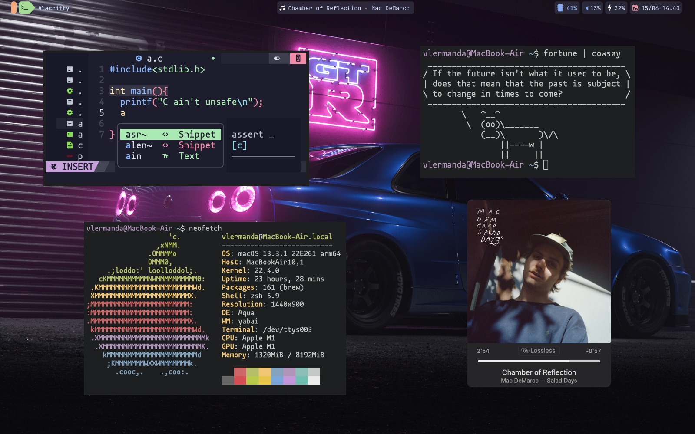

←
Studying Material
Data Structures Visualizer
William Fiset DS & Alg. videos
Steven Halim Competitive Programming Code Repo
Pascal Van Hentenryck Discrete Optimization Course (MIP)
Eventually I want to add books
Software I use

My desktop environment :) Its MacOS in an actual macbook
Terminal:
Alacritty (faster and less memory usage than iterm2)
WM:
Yabai (automatically adjust opened windows)
Shortcuts:
skhd (create your own higly customizable shortcuts)
Web browser:
Brave (chromium based. Integrated ad-blocking & extra protection)
Top bar:
Sketchybar
Text editor/IDE:
Neovim (vim but better)
Neovim framework:
Nvchad (sets all the initial configuration for vim)
Note taking:
Obsidian (I could write a blog about why this is simply better than Notion in every sense)
Music: When using spotify, this two clients were the best:
Spicetify (lightweight and customizable)
and
Spotify-tui (spotify in your terminal to be the most hipster of the hipsters).
Although I really find the explore and recommendation features in spotify highly superior, nowadays I use apple music. Better quality, better catalog and the super karaoke mode!
Organization:
Apple reminders + calendar + sometimes a kanban board for big projects (Remember scheduling is a NP problem !)
Miscellaneous
Best youtube channel ever (every frame a painting)
Nice theme/color pallete (catppuccin)
Nice platform to find related publications and bookmark them
Best platform to find wallpapers
Potential LaTeX replacement as the standard tool for academic writing